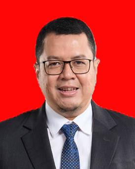

Direktur Utama — PT Jakarta Industrial Estate Pulogadung (JIEP)
Hubungi SayaSaya adalah Doktor Ilmu Manajemen Keuangan (Dr., S.E., S.H., M.M.) dengan pengalaman 18 tahun di bidang keuangan korporasi, investment banking, treasury, dan manajemen risiko. Sejak Mei 2026 saya menjabat sebagai Direktur Utama PT Jakarta Industrial Estate Pulogadung (JIEP), setelah sebelumnya menjabat Direktur Keuangan dan Manajemen Risiko (2023–2026) serta mengemban amanah sebagai Plh. Direktur Utama selama 15 bulan. Selama masa kepemimpinan tersebut, pendapatan perusahaan tumbuh 150% dan laba bersih meningkat dari Rp38 miliar menjadi Rp61 miliar (2022–2023), disertai program strategis seperti penanaman pohon bersama Presiden RI, penyediaan transportasi umum Transjakarta, dan persiapan pendirian persero serta Penyertaan Modal Daerah (PMD) JIEP.
Memimpin pengelolaan perusahaan secara menyeluruh, mencakup strategi korporasi, operasional, keuangan, dan pengembangan kawasan industri.
Mengelola keuangan, human capital, manajemen risiko, treasury, dan procurement perusahaan. Arus kas perusahaan tumbuh dari Rp220 M menjadi Rp675 M, dengan IT Maturity Index 2,50 dan Akhlak Index 2,91 — tertinggi di antara klaster Kawasan Industri Danareksa.
Mengelola perusahaan secara umum dengan capaian sales growth 126% yoy, net income growth 159% yoy, dan EBITDA growth 142%.
Mengelola marketing dan sales dengan kenaikan penjualan 126% yoy serta pengembangan bisnis new revenue stream yang tumbuh lebih dari 100%.
Menyusun RKAP serta Rencana Bisnis / RJPP PT JIEP, termasuk memimpin proyek Remasterplan PT JIEP sebagai Ketua Tim.
Menyusun kajian Bursa Kripto serta rancangan pengaturan Bappebti mengenai mata uang dan aset digital.
Menyusun rencana investasi pasar uang dan pasar modal perusahaan serta memonitor pelaksanaannya.
Menyusun rencana dan melaksanakan investasi pasar uang dan pasar modal serta memonitor pelaksanaannya.
Menangani IPO, financial advisory, dan direct financing untuk berbagai klien korporasi.
Cumlaude, IPK 3,97.
IPK 3,87.
Lulusan Terbaik.
Mahasiswa Berprestasi 2007.
Tertarik untuk berdiskusi lebih lanjut mengenai kolaborasi bisnis atau profesional?